Explore Lisbon
A Brief History
Lisbon occupies hills above the Tagus estuary and was settled by Phoenicians and Romans as Olisipo. The 1755 earthquake and tsunami destroyed much of the Baixa district, rebuilt with a grid plan under the Marquis of Pombal. Maritime expeditions in the Age of Discovery departed from nearby Belém. Alfama and São Jorge Castle record Moorish and medieval layers. Fado music emerged from riverfront neighborhoods.
Attractions Map
Top Sights & Activities
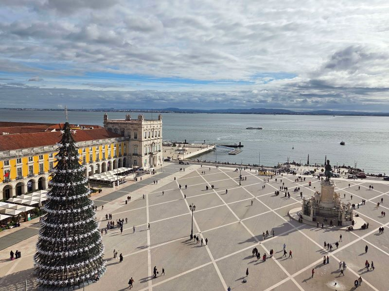
Praça do Comércio
The Praça do Comércio, more commonly known in Portuguese as Terreiro do Paço, is a large, harbour-facing plaza in Portugal's capital, Lisbon, and is one of the largest in Portugal, with an area of 175 by 175 m, that is, 30,600 m2. Facing the Tagus river to the south, the square hosted Ribeira Palace, the King of Portugal's residence, until the latter was destroyed by the great 1755 Lisbon earthquake. Terreiro do Paço metro station is located beneath the plaza.
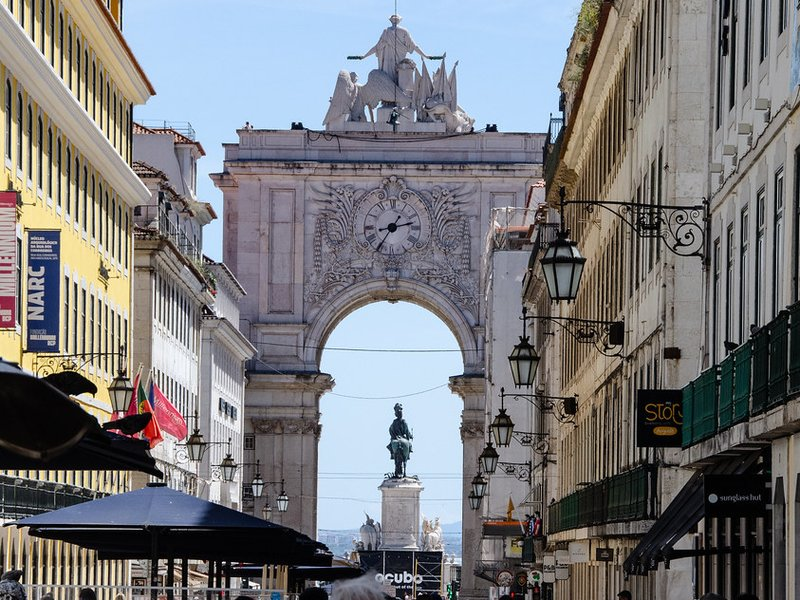
Rua Augusta Arch
The Rua Augusta Arch is a stone, memorial arch-like, historical building and visitor attraction in Lisbon, Portugal, on the Praça do Comércio. It was built to commemorate the city's reconstruction after the 1755 earthquake. It has six columns high) and is adorned with statues of various historical figures.
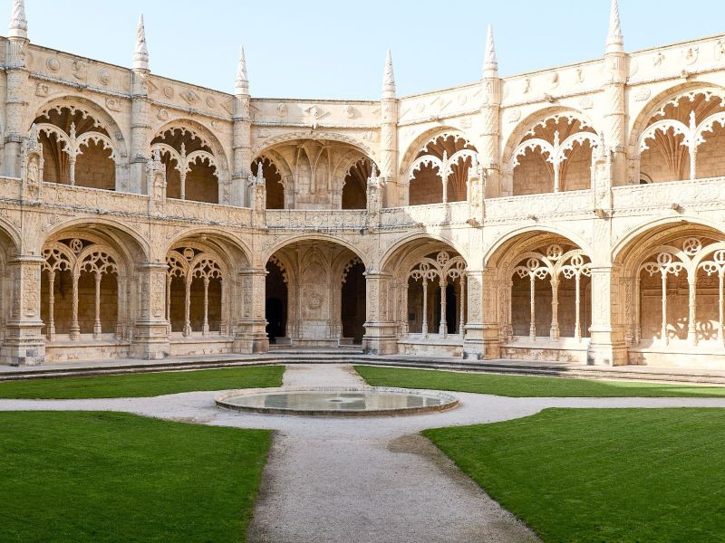
Jeronimos Monastery
The Jerónimos Monastery or Hieronymites Monastery ʒɨˈɾɔnimuʃ]) is a former monastery of the Order of Saint Jerome near the Tagus river in the parish of Belém, in the Lisbon Municipality, Portugal. It became the necropolis of the Portuguese royal dynasty of Aviz in the 16th century but was secularized on 28 December 1833 by state decree and its ownership transferred to the charitable institution, Real Casa Pia de Lisboa.
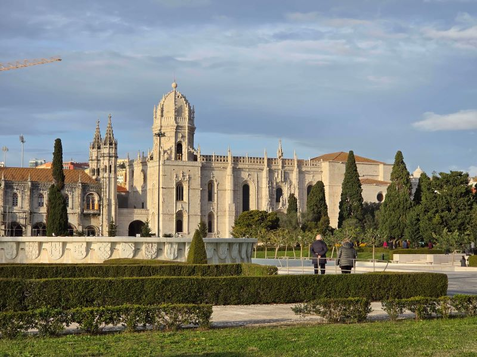
Empire Square Garden
Belém is a freguesia and district of Lisbon, the capital of Portugal. Belém is located in western Lisbon, to the west of Ajuda and Alcântara and directly east of Lisbon's border with Oeiras. Belém is famous as a museum district, as the home of many of the most notable monuments of Lisbon and Portugal alike, such as the Belém Tower, the Jerónimos Monastery, the Padrão dos Descobrimentos, and Belém Palace.
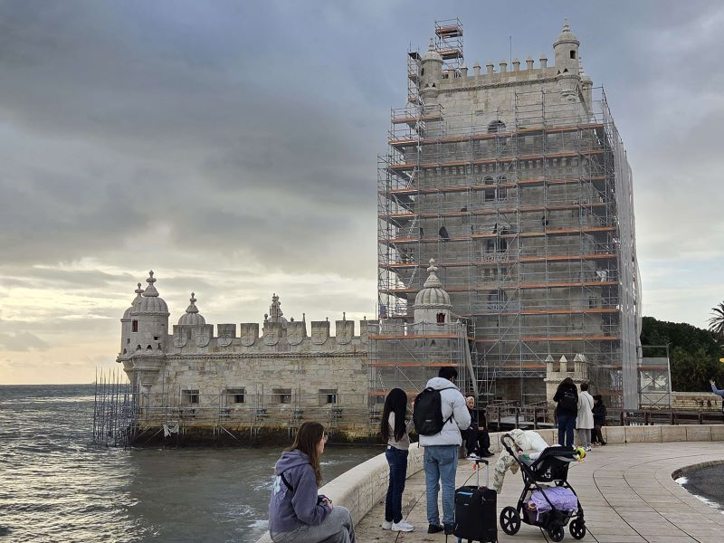
Torre de Belem
Belém Tower, officially the Tower of Saint Vincent, is a 16th-century fortification located in Lisbon, Portugal, which served as a point of embarkation and disembarkation for Portuguese explorers and as a ceremonial gateway to Lisbon. The tower symbolizes Portugal's maritime and colonial power in early modern Europe.
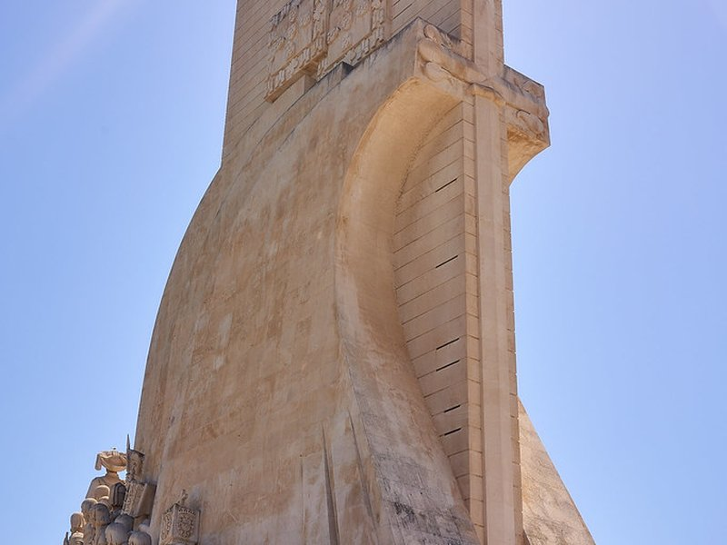
Monument to the Discoveries
The Monument of the Discoveries is a monument on the northern bank of the Tagus River estuary, in the civil parish of Santa Maria de Belém, Lisbon. Located along the river where ships departed to explore and trade with India and the Orient, the monument celebrates the Portuguese Age of Discovery during the 15th and 16th centuries.
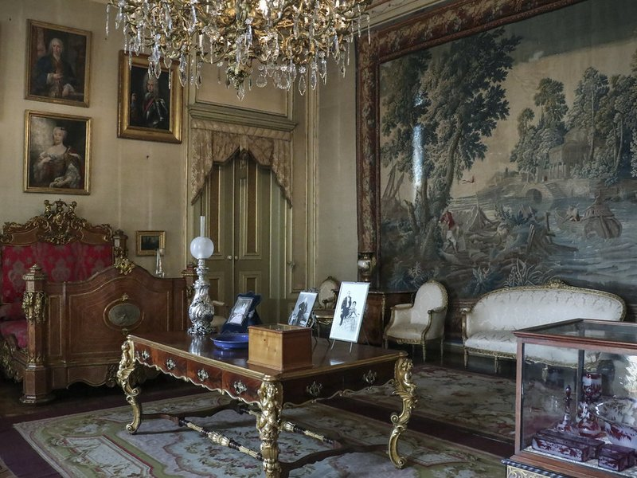
Museu do Tesouro Real
An secure, beautifully modern museum spectacularly housing the, priceless crown jewels and opulent royal treasures of the Portuguese monarchy. It offers an, fascinating glimpse into historic wealth.
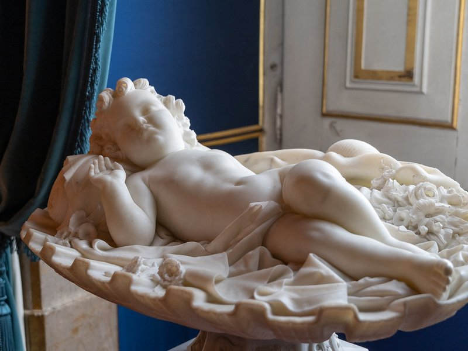
Palácio Nacional da Ajuda
The Palace of Ajuda is a neoclassical monument in the civil parish of Ajuda in the city of Lisbon, central Portugal. Built on the site of a temporary wooden building constructed to house the royal family after the 1755 earthquake and tsunami, it was originally begun by architect Manuel Caetano de Sousa, who planned a late Baroque-Rococo building. Later, it was entrusted to José da Costa e Silva and Francisco Xavier Fabri, who planned a magnificent building in the neoclassical style.
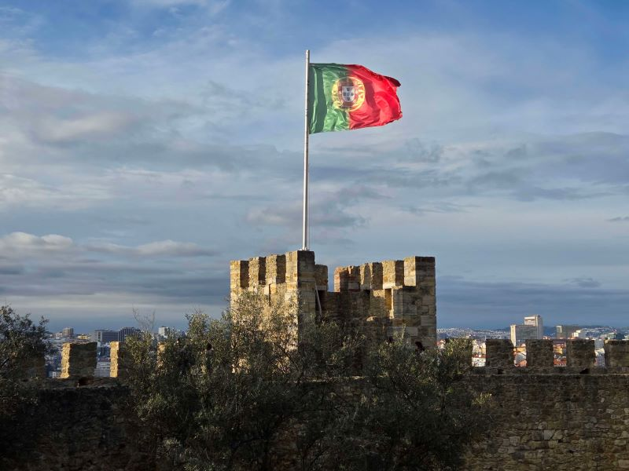
Castelo de São Jorge
São Jorge Castle, sometimes known in English as Saint George's Castle, is a historic castle in the Portuguese capital of Lisbon, located in the freguesia of Santa Maria Maior. Human occupation of the castle hill dates to at least the 8th century BC while the oldest fortifications on the site date from the 2nd century BC.
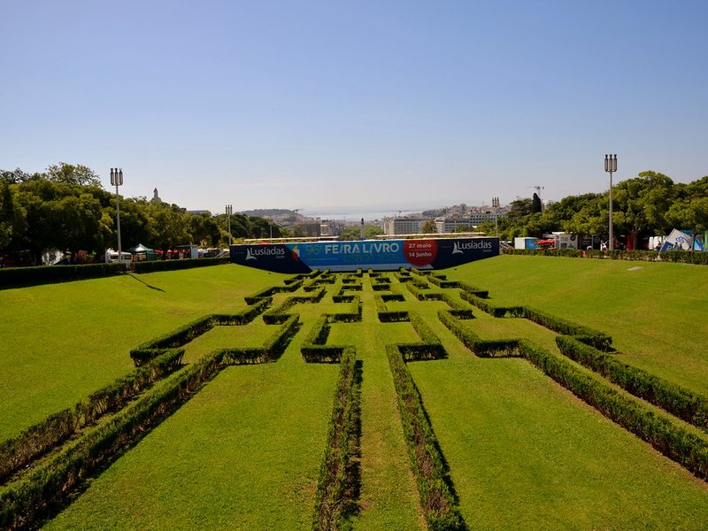
Eduardo VII Park
Edward VII Park is a public park in Lisbon, Portugal. The park occupies an area of 26 hectares to the north of Avenida da Liberdade and Marquis of Pombal Square in Lisbon's city center. The park is named for King Edward VII of the United Kingdom, who visited Portugal in 1903 to strengthen relations between the two countries and reaffirm the Anglo-Portuguese Alliance.
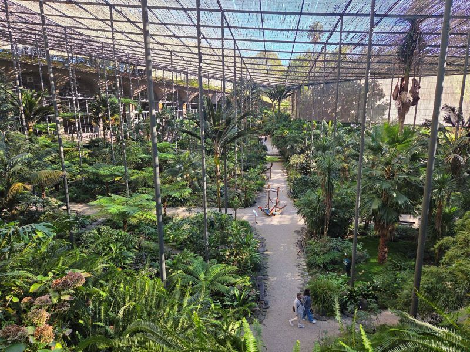
Estufa Fria
A wonderfully historic, lush greenhouse complex creatively built into a former basalt quarry. It provides a serene, naturally climate-controlled sanctuary displaying a vast, beautiful collection of exotic global plant species.